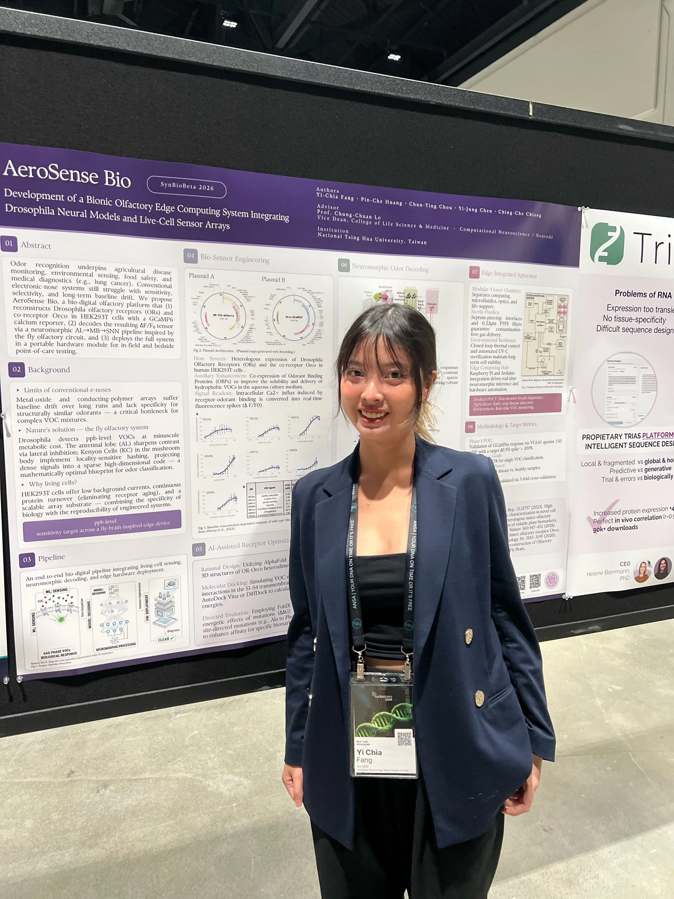
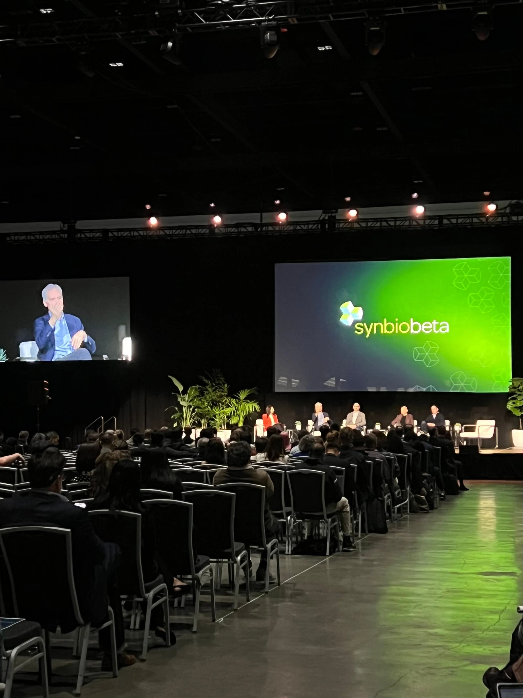
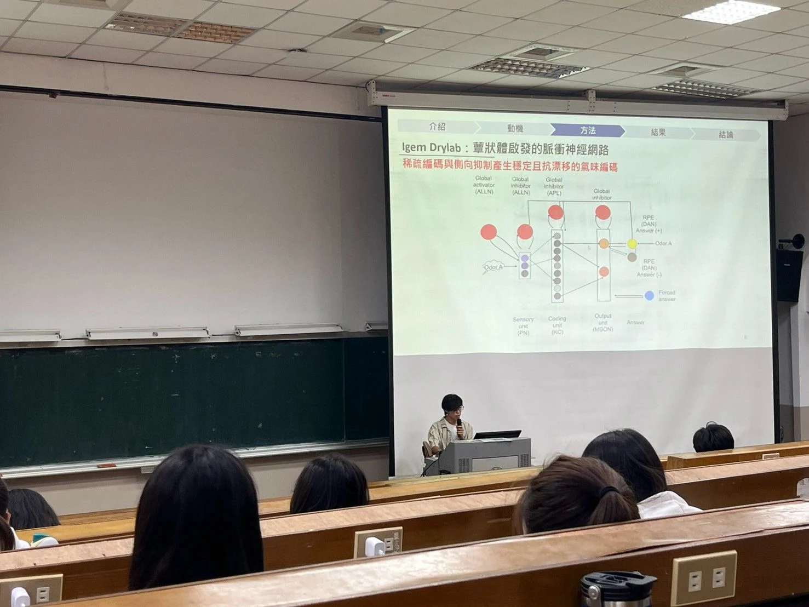
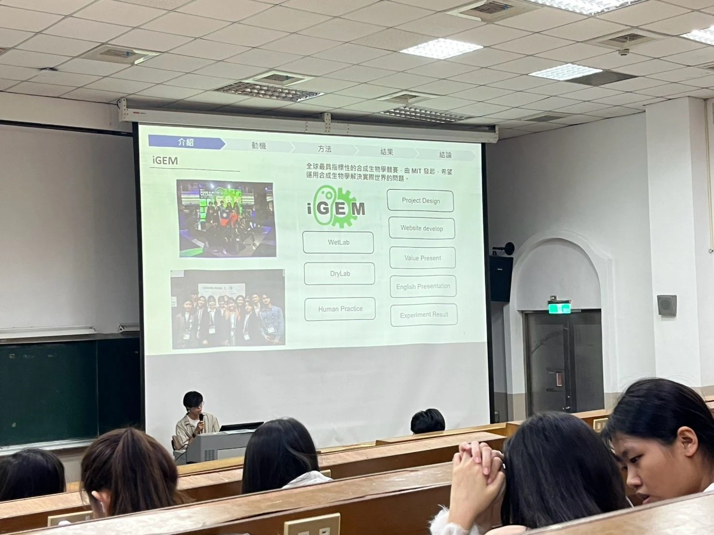
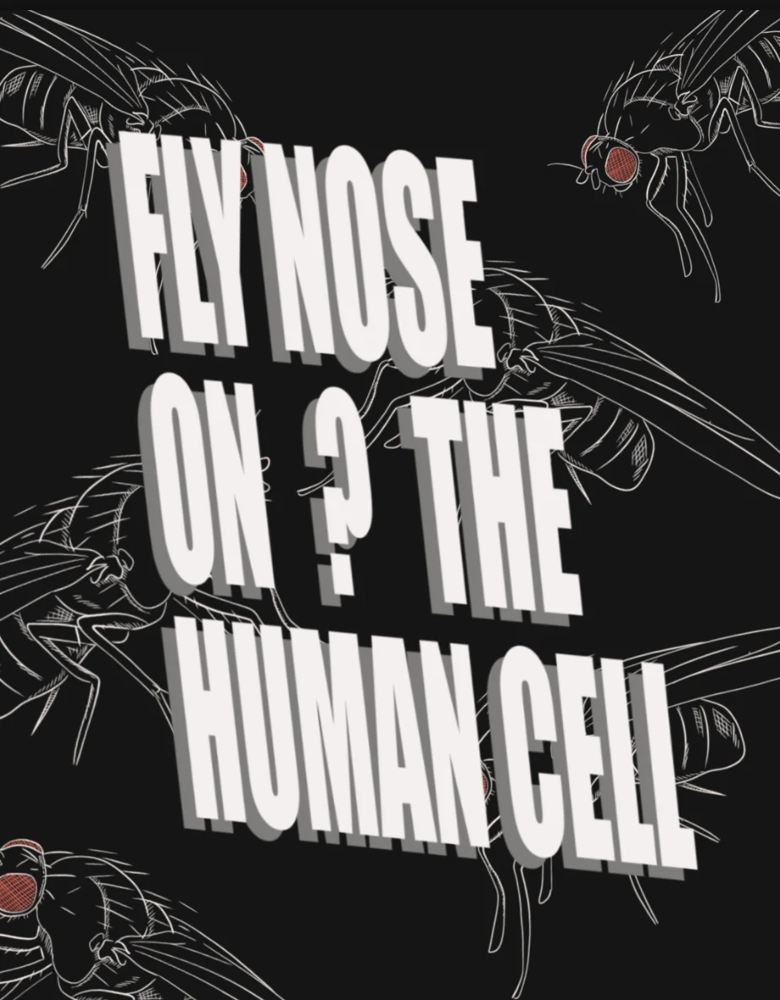
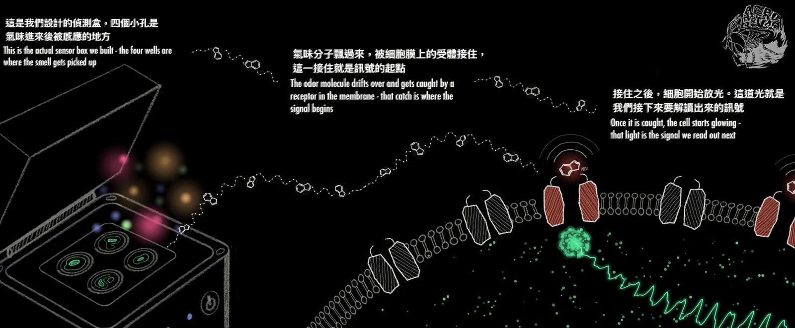

Why education belongs in the project
A fact can be understood.
A decision has to be practised.
Education is a right, and a way for people to take part in decisions that affect them. Article 26 of the Universal Declaration of Human Rights and SDG 4 give that commitment a public foundation; Target 4.7 connects learning to sustainable development. For AeroSense, it means making the science accessible enough to question, use and eventually build on. [1] [2]
Our initial survey changed the question we wanted to ask. Explaining that mold can be dangerous was too broad. Our working summary pointed instead to decisions people make about heat, smell and visible spoilage. We therefore built opportunities to choose an answer, see why it matters and try a new situation. The team now reports 107 responses; item-level counts still need verification, so this page does not turn the early summary into population percentages.
Active participation gave us a useful starting point. Freeman and colleagues' synthesis of 225 undergraduate STEM studies found an average 0.47-standard-deviation improvement in examination performance with active learning. Wouters and colleagues found benefits of serious games for learning and retention, with no clear overall motivation advantage. Those results justify testing an approach; they do not establish that our own games work. [3] [4]
We also wanted a conversation about synthetic biology itself. What does it mean to put a fruit-fly odor receptor into cultured HEK293 cells? What can a fluorescent response tell us? Who should act on a screening result? Each activity below gives a different audience a way into those questions.
Our education journey · a fly-brain map
Reach. Connect. Share.
The route borrows three landmarks from the fly olfactory system: sensory input reaches the antennal lobe, projection neurons carry information toward the mushroom-body calyx, and mushroom-body output pathways link learned information to behaviour. We use that route as an educational metaphor for first contact, deeper understanding and sharing what has been learned. The biological circuit has feedback and parallel pathways; the map is a reading guide. [5]
Region 01 · Antennal lobe / input
Start where people already are.
Olfactory signals first converge in the antennal lobe. Our first educational layer also brings many starting points together: a survey surfaces existing beliefs, a game makes a pattern tangible, and a social post reaches a person who was not looking for a science lesson.
The survey gave us a question to work on.
The diagnostic asked about food storage, visible mold, heating and the reliability of smell. We use it to identify concepts for discussion, rather than to label an audience as uninformed. Its educational role is to connect a familiar household decision to the limits of a signal: seeing or smelling one feature cannot answer every food-safety question.
Our response was a short decision exercise followed by an explanation and a chance to reconsider. The questions below are for the visitor; choices stay in this browser tab and do not add respondents to our study.
28 responses informed the redesign; 107 is a later collection total.
The team’s engineering narrative cites the early questionnaire record on . Most respondents already rejected the three claims. We therefore replaced broad awareness messaging with decisions about heat, visible mold and sensory evidence. The date and item counts for the later 107-response collection have not been supplied; no result below is attributed to that larger denominator.
| Claim respondents correctly rejected | Correct rejection count | Share of early sample |
|---|---|---|
| Cutting off visible mold makes the rest safe | 27 / 28 | 96.4% |
| Heating or roasting fully eliminates mycotoxins | 24 / 28 | 85.7% |
| Normal appearance and smell establish no risk | 23 / 28 | 82.1% |
Download the aggregate table (CSV). Percentages are calculated from the reported integers. The raw questionnaire export, coding file and missing-response breakdown are not available. This non-random, consumer-skewed sample informs what to teach; it is not a population estimate or a pre/post evaluation.
Diagnosis
What would you decide?
This is not a data-collection form and not part of our research sample. Choices stay in this browser tab. They are not stored, sent, logged, or added to n = 107.
-
Claim 1
Cutting off the visible mold makes the rest safe to eat.
Scientific interpretation
Disagree. Removing a visible colony does not automatically make the rest of a food safe. In some firm foods, public guidance allows cutting away a margin; in soft, moist, or porous foods, mycelium and some mycotoxins can extend beyond what you see. “Always safe” is the over-claim.
-
Claim 2
Heating or roasting fully eliminates mycotoxins.
Scientific interpretation
Disagree. Heat may inactivate molds without eliminating heat-stable mycotoxins. Killing or reducing the organism is not the same as removing the metabolite. “Fully eliminates” is not a safe general rule for ordinary cooking.
-
Claim 3
If it looks and smells normal, it’s not risky.
Scientific interpretation
Disagree. Appearance and smell cannot establish mycotoxin status. Absence of an off-odor does not prove absence of toxin; presence of mold does not by itself quantify a toxin. Sensory inspection is not an assay.
Survey data status
The early record contains 28 responses and three aggregate item counts. A later total of 107 is team reported; its item-level analysis has not been supplied.
Online games · Odor Pixel Suite
A smell is a pattern across channels. That sentence is easier to understand after a pattern has fooled you. Our three browser games turn recognition, navigation and mixture decoding into decisions a player can try. They are simplified teaching models, with formal learning evaluation still pending.
01 · Recognise
Odor Pixel Lab
Match an odor to a pattern of receptor-like signals, including patterns with noise. The question is how identity survives imperfect measurements.
Play the pattern game ↗02 · Navigate
Odor Maze (Scentbound Labyrinth)
Explore a maze and use scent information unlocked along the route. The activity makes a signal useful through the choice it helps a player make.
Enter the maze ↗03 · Decode
Odor Fingerprint Mixer
Explore overlapping patterns from odor mixtures. A mixed fingerprint is an interpretation problem, which connects the activity to AeroSense's decoding layer.
Explore the mixer ↗Open the complete bilingual suite. Educators can use the optional study protocol to pair responses. Casual visitors can start playing immediately.
Region 02 · Mushroom-body calyx / integration
Give curiosity a structure.
At the mushroom-body calyx, projection-neuron input reaches Kenyon cells. Our second educational layer connects ideas that first arrived separately: how a receptor works, why a reader needs controls, and how an algorithm can turn patterns into a decision.
AeroSense Learning Lab
The self-paced curriculum follows one odor signal across the project. Five modules use a question, an explanation, an interactive activity and a short assessment to connect the next concept. Learners can start with any module and revisit their browser-local progress.
From volatile molecules to receptor patterns.
02 · QuestionCan a smell answer a safety question?Practise the limits of heat, appearance and odor as evidence.
03 · BuildHow could a cell become a sensor?Connect receptor, reporter and measurement.
04 · DecodeWhat does the pattern mean?Use the fly circuit as an entry point into computational interpretation.
05 · DecideWhat should happen next?Use uncertainty, screening and confirmation to choose a responsible action.
The modules and their assessment instruments are available now. A visitor's saved score is personal feedback; it is not automatically collected into a research dataset. Formal cohort outcomes remain to be evaluated.
Region 03 · Mushroom-body output / exchange
A clearer explanation is something we make with an audience.
The last part of this map is about taking an explanation into a new setting. Industry visitors, neuroscience students and other iGEM teams bring different assumptions. Their questions reveal which links in our story need more work. The events below document that exchange; they are not controlled learning trials.
May 2026 · SynBioBeta
Explaining the platform beyond our own university
We presented AeroSense in the NextGen Bioleader / poster setting at SynBioBeta 2026. The audience included people working in industry and synthetic biology, so we had to explain where biology, optics and computation meet before discussing technical detail. The event tested how the platform reads to people who do not share our lab's starting assumptions.


September 2026 · China Medical University
Start with the biology, then connect the engineering.
At Prof. Ching-Che Charng's home institution, we shared AeroSense in a neuroscience course. The session introduced synthetic biology, iGEM and the project to students whose background was closer to neuroscience than to synthetic-biology engineering. That changed our explanation: begin with the odor-sensing logic, then show why the receptor, reporter and reader each have a distinct job.


October 2026 · iGEM TAU
Different teams, different ways to tell a research story.
We took part in the 2026 iGEM Teams Meetup organised by Tel Aviv University's iGEM team. Teams from the Americas, Europe and Asia explained their work in different ways. The exchange gave us another audience for our project and a chance to compare how teams connect a problem, a design and a claim.
Reusable now · teacher packet in preparation
Leave an activity someone else can run.
The Learning Lab, games and educator protocol provide the current reusable materials. The planned teacher toolkit will bring a lesson guide, slides and worksheets together in one packet. Until that packet is complete, the links below point to the resources that already exist.
What we can learn from the next round
Keep delivery and learning visible.
We have built activities, published teaching content and taken the project into new settings. The next question is what a learner can explain or decide afterward. We will score only paired responses from the same anonymous participant, report missing responses and keep age groups and instruments separate. A new transfer question will help distinguish remembering an answer from applying an idea.
Three kinds of evidence answer different questions: participation tells us who took part, discussion tells us what people asked, and a matched assessment can show what changed. We will use them together without converting one into another.
What each activity is intended to teach
| Learning objective | Activity / mechanic | Assessment | Evidence and limitation |
|---|---|---|---|
| Explain odor as a pattern across channels | Module 1; Odor Pixel Lab pattern matching under noise | Module pre/post questions; game concept and transfer items | Lesson and game available; no completed paired cohort |
| Distinguish visible mold, heat treatment and toxin evidence | Module 2; household decision exercise | MYTH_MOLD_REMOVE; MYTH_HEAT_DESTROY; MYTH_LOOK_SMELL_SAFE | Early n = 28 summary informed content; no measured learning gain |
| Separate receptor expression, reporter activity and a valid measurement | Module 3; connect components | Module pre/post and reflection | Published instrument; no scored cohort |
| Interpret a pattern without assuming perfect classification | Module 4; Odor Fingerprint Mixer overlapping mixtures | Module pre/post; game transfer question | Simplified teaching model; not a sensor-validation experiment |
| Use uncertainty to choose a next action | Module 5 screening and confirmation decisions | Module pre/post and separate reflection | Available to try; no participant feedback export or real-world decision outcome |
| Use limited scent information to choose a route | Odor Maze (Scentbound Labyrinth): find the exit; chests unlock scans, guidance and secret passages | No version-matched Maze assessment supplied; archived QC Shift G2 items do not measure this objective | Current maze is playable; no evaluated cohort or measured learning effect |
Matched pre/post results require the same anonymous session and instrument. We keep the food-safety items separate from olfactory-coding game scores; a shared topic does not make their scales interchangeable.
Playtest record
No completed playtest session log or participant export has been supplied. The existing playtest protocol defines the next study. A report will include date, audience, game version, completed and paired counts, missing responses, observed problems and resulting revisions. Empty fields are not zero participants.
Evidence
What evidence we actually have
A live resource is evidence that something was built. It is not automatically evidence that learning improved.
Learning, dialogue, and reach answer different questions. They are never added into one “impact” score.
| Instrument | Delivery | Evaluation | Limitation |
|---|---|---|---|
| Initial survey | Completed | Early summary available — raw export and updated analysis unavailable | Diagnostic only — counts & caveats. |
| Odor Pixel Suite | Live | Evaluation pending | Playable is not educational effectiveness. |
| Learning Lab | Live | Evaluation pending | A live course is not a cohort result. |
| University workshop | Planned | Not yet evaluated | A planned session cannot yield outcomes. |
| Elementary-school camp | Planned | Not yet evaluated | A planned session cannot yield outcomes. |
| Social media | Ongoing | Not yet evaluated | Reach is not learning. Figures not reported yet. |
A · Learning
Evaluation pending for paired gain. No empty bar charts and no fabricated zeros.
What exists today is a diagnostic and a method, not a gain table.
- Available now. Early 28-response aggregate summary; later 107-response total with no supplied item-level analysis. Instrument context. No learning gain is claimed.
- Method ready, no cohort. Learning Lab same-item pre/post per module. Odor Pixel optional study mode with paired items, transfer items, and anonymous JSON/CSV export. Workshop/camp not yet run.
- Planned measure
- Paired pre/post
- Unit
- Individual item ID / paired participant when both scored answers exist
- Interpretation
- Knowledge or decision change on those items, in percentage points
- Limitation
- A short-term post-test does not establish long-term retention. Same-item tests can partly measure familiarity with the sentence.
B · Dialogue
Dialogue is participant questions, qualitative feedback, educator notes, or design suggestions that reached the team. Page views, clicks, likes, and game completion are not dialogue.
No completed participant-feedback redesign cycle has yet been reported.
- No consented quotes, observation cards, or workshop notes are published.
- University workshop and elementary camp are the planned dialogue settings.
- On-wiki discussion prompts are teaching aids, not a record of what anyone said.
C · Reach
Reach is not learning. Traffic is not knowledge gain.
- Social Reach, Engagement, and Learning evidence: Not reported yet — not zero.
- Game-visit analytics: not reported.
- Resource downloads: no downloadable teacher file exists on this wiki yet, so no download count.
- Open access to the playable suite and the live Lab is a delivery fact, not a participant count.
Privacy: the Learning Lab and game study mode do not collect names, emails, or learner IDs. See Safety · Data and privacy.
Assessment methods, instruments and reusable resources
Measurement
Two measurement chains, not one score
Food-safety decisions and olfactory / synthetic-biology literacy are different jobs. We reuse item IDs where the job is the same. We do not add the two chains into a single learning-gain number.
Each node is a delivery fact plus an evaluation fact. Evidence view (above) adds scanning labels. The path itself does not change.
Chain A · Food-safety decision literacy
Bridge · AeroSense Learning Lab
Module 2 feeds Chain A. Modules 1, 3, 4, and 5 feed Chain B. Do not pool those scores.
Chain B · Olfaction and synthetic-biology literacy
A1 · Initial survey
The same chains, as a list
This list is the complete method. The diagram above is a scanning aid. JavaScript is not required to read it.
A1 · Initial survey
A2 · Canonical misconception item IDs
A3 · Learning Lab Module 2
A4 · Educator-mode / workshop / camp pre–post
A5 · Paired outcome analysis
Bridge · AeroSense Learning Lab
B1 · Odor Pixel Suite
B2 · Learning Lab Modules 1, 3, 4, and 5
B3 · Workshop / camp hands-on discussion
B4 · Conceptual / participation outcomes
Why identical wording — and why that is not enough
Benefit. On Chain A, Module 2 reuses the survey’s three statements with the same item IDs. That is for cross-instrument comparability: a diagnostic baseline and a later pre/post can be read against each other instead of against three unrelated quizzes.
Caution. Same-item pre/post testing can partly measure familiarity with the original sentence. If a future consented cohort is collected, we recommend one parallel “transfer” item per concept — a new wording of the same idea — to test whether learning generalizes. No transfer-item results exist, and none are shown.
Odor Pixel Suite is not in that wording match. Its teaching target is olfactory coding. Comparability across Chain A instruments does not license a combined “education impact” score with Chain B.
Iteration
Impact from us / impact on us
The right-hand column matters more than a generic outreach summary: what did evidence change in our education design?
A completed arrow is shown only when a real redesign occurred. Internal design reviews are labeled as such. They are not participant quotes.
What learners may learn from us
Intended outcomes of live artifacts. These are teaching aims, not measured gains.
- Track A. Reconsider the residual heat and look/smell food-safety claims (Module 2).
- Track B. Treat odor as a pattern; see a living-sensor idea; interpret screening without treating it as a verdict (Lab 1, 3–5; Odor Pixel Suite).
- Participate. Planned workshop and camp. Not yet available.
What we learn from learners
Documented education-design iterations only.
-
Evidence. Early n = 28 aggregate record: 27/28 rejected the mold-removal claim, 24/28 the heat claim and 23/28 the look/smell claim. These are reported counts from the team narrative, not a reanalysis of a raw export.
Change made. Focused Track A on decision-related misconceptions instead of generic awareness.
Where it appears. This page; Module 2; shared item IDs.
Status. Completed education-design iteration. Learning-gain evaluation still pending.
-
Evidence. Internal review after the games existed: odor-as-pattern play does not cover biology → engineering → computation → decision.
Interpretation. A playable suite is not a full AeroSense pathway.
Change made. Built the five-module Learning Lab alongside the games, with Module 2 matched to the survey items.
Where it appears. Learning Lab.
Status. Completed internal design iteration. Not a participant-feedback cycle.
-
Evidence. Curriculum-writing constraint: a screening band is easy to read as a certificate.
Interpretation. Risk language can over-claim even when the science sentence is careful.
Change made. Module 5 states that screening is not confirmatory testing and should trigger a next action, not a verdict.
Where it appears. Module 5.
Status. Completed education-material change. Treating that sentence as a finished device UI is a separate, later evaluation — not claimed as a hardware redesign from this page.
-
Evidence. No workshop, camp, or playtest export is published.
Interpretation. Instruments can exist before audiences do.
Change made. None from participant feedback. The arrow stops here.
Where it would appear. Future Module / game copy, after a real export and notes.
Status. No completed participant-feedback redesign cycle has yet been reported.
Education iteration model
- AssumeCompleted. We assumed broad mold-risk misunderstanding.
- DiagnoseCompleted. Initial survey.
- DesignCompleted for current educational artifacts (two tracks, games, Lab, item IDs).
- DeliverGames playable; Learning Lab live. Workshop and camp planned.
- MeasureFormal cohort evaluation pending.
- ListenPending structured cohort feedback.
- ReviseNext evidence-based redesign pending.
Reuse
Reuse the AeroSense Education Framework
Not just the lessons we built — but how someone else can run them.
Only resources that actually exist are listed. There is no Download button on a missing file. The linked game build, protocols and question bank are included in this wiki. Their published iGEM routes must be checked after deployment.
| Resource | Purpose | Audience | Format | Availability | Evaluation | Reuse notes |
|---|---|---|---|---|---|---|
| Odor Pixel Suite | Interactive olfactory-pattern education (three playable games) | General visitors; school / workshop learners | Browser suite | Live / playable · included in this wiki Odor Pixel Suite (opens in a new tab) | Next validation | Everyday visitors play immediately. Not official iGEM hosting yet. |
| Suite educator record · includes archived Game 2 | Educator overview and study workflow; QC Shift content is historical and does not describe the current Maze | Facilitators | HTML | Live · /education/ (opens in a new tab) | Results empty | From PinChe567/iGEM-game. Game 2's QC Shift record is archived; no matched Maze outcome is available. Results fields stay empty until a real export. |
| Education study protocol | Optional workshop study mode: paired pre/post, local export, how to count paired n | Educators / research-style deployment | Markdown | Live · education-study-protocol.md (opens in a new tab) | Method documented; no cohort | Casual play does not use this protocol. Facilitators enable study mode; hub Play cards do not. |
| Question bank | Conceptual item IDs and transfer items; G2 is archived QC Shift content | Facilitators analyzing exports | Markdown | Live · question-bank.md (opens in a new tab) | No scored cohort | Traceable IDs. Do not recode answers to invent improvement. |
| Data dictionary / export schema | Reproduce anonymous session fields, JSON/CSV export, paired-n rules | Facilitators / other iGEM teams | Markdown | Live · data-dictionary.md (opens in a new tab) | Schema only | Storage key suite.education.v1. Empty cells mean missing, not zero. No PII fields. |
| Playtest protocol | How to run a session and what not to collect | Facilitators | Markdown | Live · playtest-protocol.md (opens in a new tab) | Protocol; no filled session | From PinChe567/iGEM-game docs/education-games/. |
| Per-game facilitator notes | Game-specific educator copy | Facilitators | Markdown | Live · pack README (opens in a new tab) | Pending | Files game-1-pixel.md, game-2-qc-shift.md, game-3-scent-mixer.md. Odor Maze (Scentbound Labyrinth) is the current Game 2. game-2-qc-shift.md and G2 question-bank items are archived QC Shift materials, not matched Maze teaching or assessment tools. |
| AeroSense Learning Lab | Self-paced biology → engineering → decision curriculum | Self-paced learners; educators | Wiki pages | Live on this wiki · learning-platform.html | Next validation | Five modules, any order. Local store aerosense.learn.v2. |
| Module 2 / survey item IDs | Cross-instrument Track A comparison | Educators measuring food-safety claims | Live lesson + js/learning-data.js |
Live · learning-02-mold.html | IDs stable; no paired cohort | MYTH_MOLD_REMOVE, MYTH_HEAT_DESTROY, MYTH_LOOK_SMELL_SAFE. |
| On-wiki discussion prompts | Classroom talk after a module | Educators | HTML on the Lab | On-wiki · Learning Lab educator pack | Teaching aid, not dialogue evidence | Not a downloadable file. No Download button. |
| Personal dashboard / local schema | Visitor can see their own pre/post in this browser | Self-paced learners | Wiki page + JS | Live · progress.html | Not a study dataset | js/learning-storage.js. Nothing is sent until a consented backend exists. |
| Teacher toolkit (guide, slides, worksheets) | Printable classroom packet | Teachers | — | In preparation · no file | — | No placeholder download. See Learning Lab educator pack. |
| Reusable graphics / QR pack | Screenshots, GIFs, QR codes | Wiki / classroom | — | Not in this repository | — | Do not invent paths. |
For educators: optional study mode
Casual visitors play the suite immediately. There is no mandatory pre-test on the public Play path. That is the default learner experience.
A separate workshop study mode can add paired measurement. For Game 2, the archived QC Shift G2 items do not match the current maze; they must not be interpreted as a Maze learning-gain measure. A matched Maze protocol remains to be developed. Facilitators follow the education study protocol (opens in a new tab): two short pre questions, the usual game, the same concepts after play plus one transfer item, optional feedback, then anonymous JSON (source of truth) and optional CSV. Answers stay in that browser. Nothing is transmitted automatically.
How to turn the mode on is documented in that protocol, not as this page’s primary play button. View educator resources (opens in a new tab)
Run this yourself
A reproducible workflow for another team. Casual game play does not require steps 4–8. The evaluation workflow is optional for educators and workshops.
- Choose the audience (general public, elementary, university, self-paced).
- Define the learning objective (Track A decision claims, or Track B olfactory / synbio ideas — not both as one score).
- Select the relevant Learning Lab module and/or Odor Pixel game.
- If evaluation is intended, administer the pre-instrument (Lab quiz, or game study mode).
- Run the activity.
- Administer the paired post-instrument.
- Match responses using the documented anonymous / item-ID workflow. Paired n counts only sessions with scored pre and post for the same ID. Do not impute missing posts.
- Report exact denominators and limitations. Empty is not zero.
- Collect qualitative feedback separately from anonymous JSON. Do not merge with class lists.
- Change the educational material only if evidence supports a redesign, and log it.
Why shared item IDs — and why that is not enough
See Why identical wording — and why that is not enough for the same-item / transfer caution. Game study mode already includes transfer IDs; no transfer-item results are reported here.
Teach it yourself
A dedicated slide deck, print-and-play adaptation, original survey form and packaged teacher worksheets are not yet available. The live Module 2 items reproduce the three diagnostic claims; they do not replace the original four-module survey instrument. Wiki-authored content follows the site’s CC BY 4.0 notice; third-party assets and game software retain their own notices.
Limits
What our evidence does not yet show
These are the bounds of the claim, not an apology for building the tools.
- Initial survey sample caveats and item-level analysis status: Diagnosis. Not a population prevalence or learning-gain study.
- Exact-item pre/post may create familiarity effects. Transfer-item results are not available — see measurement caution.
- An immediate post-test, when it exists, will not establish long-term retention.
- Social engagement does not establish learning. Reach figures are not reported yet.
- Live Odor Pixel Suite / Learning Lab ≠ educational effectiveness. The second game is Odor Maze (Scentbound Labyrinth). The archived QC Shift guide and G2 questions do not assess the current maze.
- Planned workshop and camp cannot yet provide outcome evidence. Different age groups will not be pooled as one equivalent cohort.
- Survey and Module 2 share food-safety items; games teach olfactory coding / mixture decoding. We will not report a single correction rate across instruments unless items actually match.
- This Education wiki page is English. The game suite is bilingual (zh-Hant / English). No separate bilingual teacher packet is published on this wiki.
Future work: test the activities with learners
The next delivery round brings the existing materials to facilitated audiences, then evaluates paired responses and a transfer question. Attendance, consent arrangements, versioned materials and exact paired denominators will accompany any outcome claim. Recovering the original survey export and verifying the later 107-response total remain separate tasks.
Planned · Xinfeng, Hsinchu
Elementary-school camp
For younger learners, we plan shorter concepts, visual comparisons and guided play. The aim is to help a child explain how a pattern can carry information and why a result can still be uncertain.
The current plan identifies Xinfeng, Hsinchu. A confirmed activity record, attendance, photographs and learning outcomes are still to be added. Participation and any photographs will follow school and guardian arrangements.
Planned · with Prof. Chung-Chuan Lo
Computational neuroscience workshop
For high-school-to-university learners, the planned workshop moves from biological inspiration to model reasoning. Participants will connect an odor-response pattern to coding, noise and a classifier's limits, using the curriculum and games as discussion material.
The format is planned with Prof. Chung-Chuan Lo. A completed workshop and measured learning effect are not yet part of this record.
The next technical carousels, short science videos and printable teacher packet will follow the same assessment map. No effect is inferred from a published activity alone.
References
- United Nations. Universal Declaration of Human Rights, Article 26 (1948).
Source highlights
Education as a right and a means for human development. This supplies the public principle behind access to our resources.
- United Nations. Sustainable Development Goal 4, including Target 4.7.
Source highlights
Inclusive education and learning for sustainable development; an organising aim, not evidence of this project's impact.
- Freeman, S. et al. (2014). Active learning increases student performance in science, engineering, and mathematics. PNAS, 111, 8410–8415.
Source highlights
A synthesis of 225 undergraduate STEM studies supports testing active learning. Its effect sizes are not AeroSense education results.
- Wouters, P. et al. (2013). A meta-analysis of the cognitive and motivational effects of serious games. Journal of Educational Psychology, 105, 249–265.
Source highlights
Learning and retention benefits depended on the instructional setting; games did not show a clear overall motivation advantage. Our suite requires its own evaluation.
- Cheng, L.-S. et al. (2025). Hybrid neural networks in the mushroom body drive olfactory preference in Drosophila. Science Advances, 11, eadq9893.
Source highlights
Research context for the fly-inspired route used as this page's educational metaphor. The route is a teaching framework, not a measured neural model of learners.
Three formats for a scrolling audience.
The survey and the games ask people to seek us out. Instagram lets us introduce the same ideas in a feed they already use. We separated that work into technical carousels, sustainability questions and short explanations, each with a different job.
From a fly nose to an edge device
The first carousel asks, “What if we put a fruit fly's nose inside a human cell?” It explains the intended chain from odor recognition through calcium to a fluorescent reporter. The two published teaching graphics below make the receptor and reporter visible. Fluorescence in our experimental system still needs to be characterised against controls; brightness alone is not a calibrated odor-concentration scale.


The two published Parts Design graphics are the current technical series. Future work covers the decoding and reader carousels and short science videos.
Sustainability Pop Quiz
Four question-and-answer cards connect a design choice with an SDG. Open a card below to see the intended connection.
Earlier warning of disease in a fruit shipment?
SDG 2 · Zero Hunger. The intended benefit is more time to decide what to do with a batch. Detection lead time and avoided loss still need measurement.
A biological sensor with a custom optical reader?
SDG 9 · Industry, Innovation and Infrastructure. Building local research and engineering capability. The integrated platform's performance and power are validation questions.
A cartridge designed for repeated readings?
SDG 12 · Responsible Consumption and Production. Reuse is a design aim. Lifetime tests and a life-cycle comparison must establish any reduction in waste.
Design choices changed by people outside the lab?
SDG 17 · Partnerships for the Goals. Knowledge-sharing can improve a design. An interview, mentorship and a formal partnership describe different relationships.
We will evaluate this channel as reach and dialogue: what people save, ask or challenge. Those observations will inform future posts. Learning change needs a separate before-and-after assessment, so follower activity is not reported as a learning gain.